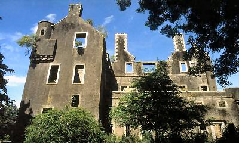

The Lady of Kenmure
La Dame de Kenmure
The Northumbrian Insurrection in 1715
Tune - MélodieSame tune as Kenmure's on and awa
Sequenced by Christian Souchon

|
To the tune:
This song is quoted on numerous websites (Glasgow Guide, fsu.edu, musicanet, wikipedia, etc.) as it contains the phrase "From John o' Groats to Maidenkirk" which was replaced by "From Land's End to John o'Groats" after the Union of kingdoms (Maidenkirk is considered the southernmost town in Scotland). But nothing about the author of this song or its first appearing in print or handwriting could be found. It is evidently sung to the same tune as the previous one. |
A propos de la mélodie:
Ce chant est cité sur de nombreux sites (Glasgow Guide, fsu.edu, musicanet, wikipedia, etc.) parce qu'il contient l'expression "de John o'Groats à Maidenkirk" (Maidenkirk étant considérée comme le village le plus méridional d'Ecosse) qui fut détrônée par "de Land's End à John o'Groats après l'union des royaumes. Mais rien n'a pu être découvert au sujet du chant: ni son auteur, ni la date de sa première publication imprimée ou notation manuscrite. Il est clair qu'il se chante sur la même mélodie que le précédent. |

|
THE LADY OF KENMURE
Refrain: From John O' Groats to Maidenkirk You'll never find a truer For loyal faith and dauntless deeds, Than the Lady of Kenmure.... 1. Though Whigs like rats infest the land, And faithful hearts grow fewer, Let Scotland never call in vain, For a Gordon of Kenmure!.... Refrain 2. 'Ill news, ill news, my lady dear, 'King James his foes must fly, 'And Lord Kenmure in London Tower 'This week is judged to die!'.... Refrain 3. King George he answered never a word, Nor raised her from her place, But up she rose and proudly stood, And looked him in the face. Refrain 5. 'Since you have not the royal heart To grant this little thing, I ask for grace from a graceless race 'Tis mercy crowns a King. Refrain 6. Haven't you not worked your will enough On royal Stuart's line? Now Scotland runs with noble blood, And London runs with wine?'.... Refrain |
LA DAME DE KENMURE
Refrain: De John O' Groats à Maidenkirk Il n'est d'âme plus pure, De coeur plus noble que le tien O, Dame de Kenmure.... 1. Les Whigs pullulent tels des rats. La foi au Roi détonne, Mais l'Ecosse ne sera pas Trahie par un Gordon!.... Refrain 2. 'Dame, sais-tu ce que l'on dit? 'Jacques a rejoint la France, 'Et Lord Kenmure aura péri A Londres dès dimanche.' Refrain 3. Le roi Georges demeura coi, Et refusa la grâce. Elle s'est relevée et l'a, Regardé bien en face. Refrain 4. 'Le coeur d'un roi eût accédé A cette humble requête. C'est par sa magnanimité, Qu'un roi se fait connaître. Refrain 5. Ce n'est plus les Stuarts seulement Dont tu crains jusqu'à l'ombre. L'Ecosse abreuve de son sang Les ivrognes de Londres.'.... Refrain Trad. Christian Souchon (c) 2006 |
|
Beside this dauntless intercession, the Viscountess of Kenmure,
Lady Carnwath
, proved a woman of great energy and courage. After the execution of her
husband,
she hastened to Scotland by herself and secured his letters and other important papers.
When his estates were exposed for sale, she was able to raise funds and purchase them. When her eldest son, Robert, came of age, she handed the property over to him, reserving only a small life annuity for herself. She died in 1776, having survived sixty years her unfortunate husband. |
Outre cette intrépide intercession auprès du roi, la Vicomtesse de Kenmure,
Lady Carnwath
, se révéla être une femme d'une grande énergie et d'un grand courage. Après l'exécution de son
époux
, elle regagna l'Ecosse, en toute hâte et sans escorte, pour mettre à l'abri ses lettres et autres documents importants.
Quand ses biens furent mis en vente, elle sut réunir les fonds nécessaires pour les racheter. Lorsque son fils Robert atteignit sa majorité, elle transféra sur lui la propriété de tous ces biens, ne se réservant qu'une modeste rente viagère. Elle mourut en 1776, après avoir survécu 60 ans à son infortuné mari. |